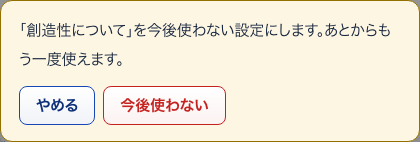
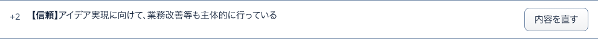

36観点を今後使わない確かめる小窓
S16 行動指針 ・ 押すもの: 「今後使わない」 ・ 閉じる: やめる

中に出るもの
- 「（観点の呼び名）」を今後使わない設定にします。あとからもう一度使えます。
中で押せるもの
- 今後使わない: 観点を使わない設定にする
- やめる: 小窓を閉じる
37段階の内容を直す開いて見る
S16 行動指針 ・ 押すもの: 「内容を直す」 ・ 閉じる: やめる

中に出るもの
- この段階の呼び名
- どういう状態か
中で押せるもの
- 保存する: 段階の文を保存する
- やめる: 欄を閉じる
38観点をもう一度使う押したあとに出る
S16 行動指針 ・ 押すもの: 「もう一度使う」 ・ 押すと保存や送信が起きるので、写真は載せていない
中に出るもの
- 使わない観点を戻す
- 保存の文
39完全に消す確かめる小窓
S16 行動指針 ・ 押すもの: 「完全に消す」 ・ 閉じる: やめる
中に出るもの
- 「（観点の呼び名）」を完全に消します。元に戻せません。
- 5段階の文章n件も一緒に消えます。（基準のときは 中に入っている観点n件も一緒に消えます。）
- 公開したアンケートと確定済みの評価は変わりません。
中で押せるもの
- 完全に消す: 観点（または基準）を消す
- やめる: 小窓を閉じる
40観点を追加開いて見る
S16 行動指針 ・ 押すもの: 「＋ 観点を追加」 ・ 閉じる: やめる
中に出るもの
- 観点の呼び名（そのまま設問になります）例：協調性について
中で押せるもの
- 追加する: 観点を1つ足す
- やめる: 欄を閉じる
41消せない理由（観点）開いて見る
S16 行動指針 ・ 押すもの: 「「使用中」の項目を消せない理由」

中に出るもの
- 一度でもアンケートに出した項目は、完全には消せません。
- 公開したアンケートと確定済みの評価を変えないためです。
- 「使わない」にすると、次のアンケートから外せます。